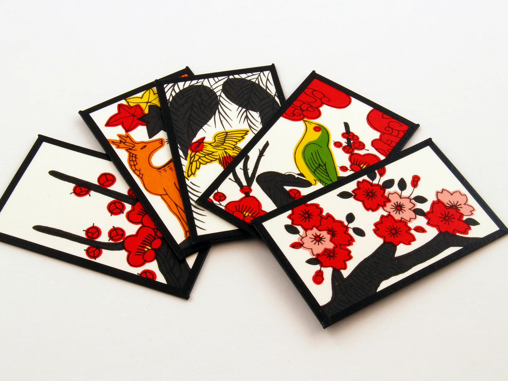
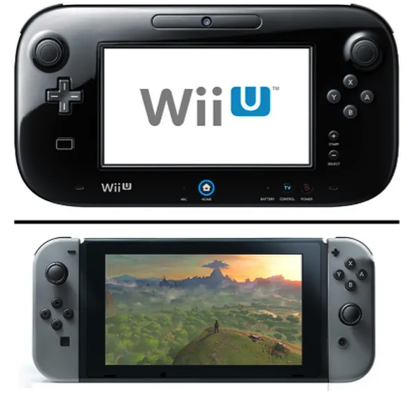

|  | Nintendo began in 1889 as a small company in Kyoto, Japan, producing handmade Hanafuda playing cards under the leadership of its founder, Fusajiro Yamauchi. For decades, Nintendo experimented with various business ventures, including toys, with modest success. It wasn’t until the 1970s, under the direction of Hiroshi Yamauchi, that Nintendo began to explore the emerging field of electronic gaming, creating early consoles like the Color TV-Game and achieving its first major arcade success with Donkey Kong in 1981, designed by Shigeru Miyamoto.. |
|---|
The 1980s marked Nintendo's rise to global prominence. The company launched the Game & Watch series in 1980, followed by the groundbreaking Nintendo Entertainment System (NES) in 1983 (Japan) and 1985 (worldwide). These products, along with iconic games like Super Mario Bros. and The Legend of Zelda, established Nintendo as a household name in gaming. The success continued into the 1990s with the Super Nintendo Entertainment System (SNES), Game Boy, and the Nintendo 64, which brought 3D gaming to the forefront |
 |
|---|
|  | In the 2000s and beyond, Nintendo continued to innovate with the GameCube, which had a dedicated fanbase, and the massively successful Wii, introduced in 2006 with its innovative motion controls. The Nintendo DS dominated handheld gaming during this period. Despite the Wii U's struggles in 2012, Nintendo bounced back with the Nintendo Switch in 2017, which successfully merged home and portable gaming, and became a global hit with games like The Legend of Zelda: Breath of the Wild. |
|---|